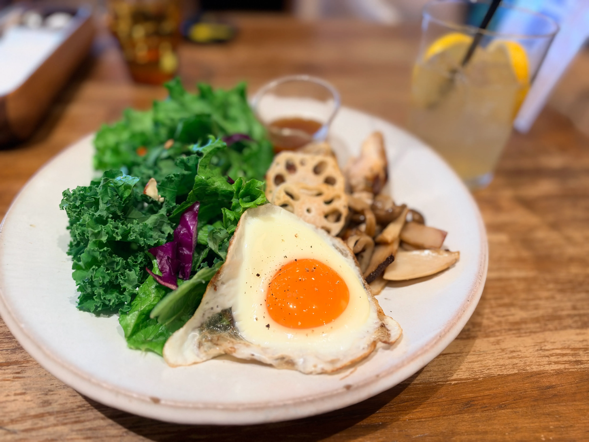

当園自慢の野菜を使ったカフェがオープンします

当園自慢の野菜をふんだんに使用したフードやドリンクを提供するため、メニュー開発に取り組んできました。 皆様に喜んでいただけるよう、自信を持ってご紹介できるメニューとなっております。
当日は、メニューの一部を試食していただけます。 新鮮な食材を使った料理や、自慢の特製ドリンクをご用意しておりますので、ぜひお越しください。 また、試食会に参加していただいた方には、アンケートにご協力いただけるようお願いする予定です。 皆様の貴重なご意見をいただき、より良いメニュー作りに生かしていきたいと思います。
日時：9月7日（日）10時から12時まで
場所：つむぎ農園横 つむぎcafe
試食会で皆様にお会いできることを心から楽しみにしております！